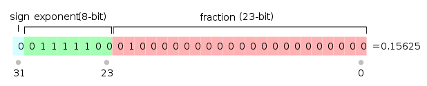
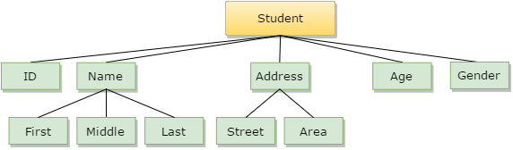

<!DOCTYPE html>
<html lang="en">
  <head>
    <meta charset="utf-8" />
    <meta name="viewport" content="width=device-width, initial-scale=1.0, maximum-scale=1.0, user-scalable=no" />

    <title>Tipos de Datos Abstractos</title>
    <link rel="stylesheet" href="./dist/reveal.css" />
    <link rel="stylesheet" href="./dist/theme/league.css" id="theme" />
    <link rel="stylesheet" href="./css/highlight/zenburn.css" />
    <link rel="stylesheet" href="./_assets/slides/css/filminas.css" />

  </head>
  <body>
    <div class="reveal">
      <div class="slides"><section  data-markdown><script type="text/template">
# Tipos de datos Abstractos</h1>
    
<small>Created by
    <a href="https://t.me/rmarku" target="_blank">
        <i class="fab fa-telegram-plane"></i>rmarku
    </a>
</small>

</script></section><section  data-markdown><script type="text/template">

## ¿Qué es la Información?

Unidad básica de información (BIT)

* 1 bit ➡️ 2 posiciones (0-1)
* n bit ➡️ 2<sup>n</sup> posiciones

</script></section><section  data-markdown><script type="text/template">

## Enteros Binarios

#### Representación de enteros positivos

00100110 ➡️ 2<sup>1</sup> + 2<sup>2</sup> + 2<sup>5</sup>=2 + 4 + 32=38

#### Representación de enteros Negativos (complemento a 1)

11011001 ➡️ -38<br>

Podemos representar desde -2<sup>(n-1)</sup>-1 hasta 2<sup>(n-1)</sup>-1

#### Representación de enteros Negativos (complemento a 2)
11011010 ➡️ -38<br>

<aside class="notes">
    El primer dígito representa positivo o negativo, en caso de ser negativo se invierten todos los otros bits<br>
    En este caso se suma un 1 a la representación del complemento a 1 del número negativo.
</aside>


</script></section><section  data-markdown><script type="text/template">

## Números con coma Binarios

#### Notación de punto flotante (**FLOAT**)

El número 387,53 se representa como 38753x10<sup>-2</sup>

En binario:



Esto nos permite representar números desde<br> 2<sup>23-1</sup> x 10<sup>127</sup> ➡️ 10<sup>-128</sup>

</script></section><section  data-markdown><script type="text/template">

## Caracteres

#### ASCII

<script>
    function ascii(txt) {
        document.getElementById('asciiOut').innerHTML = txt.value.charCodeAt(0);
        txt.select()
    }
__SCRIPT_END__

<input type="text" maxlength="1" size="1" onkeyup="ascii(this)"
       style="height: 100px;font-size: 40px;width: 100px;text-align: center;">
➡️ <span id="asciiOut" style="min-width: 100px;display: inline-block;"></span>

Interpretación de binarios en símbolos gráficos

Hay distintos encoding, ASCII, UTF8, UTF16, ISO, etc...

Lo más común es utilizar 8bits, pero hay encodings de 7, 10, 16, 32 bits...

El número binario **00100110**, puede ser el número **38**, el **0x26** o el símbolo **'&'**


<aside class="notes">
</aside>

</script></section><section  data-markdown><script type="text/template">

## Hardware y Softare

* La memoria de la PC es un conjunto de **BITs**
* Los bits se agrupan de a **BYTEs**
* Las computadoras tienen un conjunto de datos nativos
* Los lenguajes de programación de alto nivel, ayudan a simplificar el uso de estos tipos de datos.

<aside class="notes">
</aside>


</script></section><section  data-markdown><script type="text/template">

## Tipo de Dato
    
* No es el dato, es lo que puede contener
* Un tipo de dato es, en esencia, un espacio en memoria que se interpretan de cierta forma.
* Al tipo de dato se le imponen restricciones, como los valores que puede tomar y 
  que operaciones se pueden realizar

Por ej: el tipo "int" es generalmente un conjunto de 32 bits que representan un valor entero cuyo rango es

-2.147.483.648 ➡️ 2.147.483.647

-2^31 ➡️ 2^31
   
</script></section><section  data-markdown><script type="text/template">
## Tipo de Dato primitivo

Son los tipos de datos que vienen en el lenguaje de programación. Algunos de C++ son:
 * char
 * float
 * int
 * unsigned int
 * long

</script></section><section  data-markdown><script type="text/template">
## Tipo de Dato de usuario

Algunos lenguajes permiten al usuario definir sus propios tipos de datos.


```cpp
typedef unsigned char miByte;

miByte contador = 5;
```

</script></section><section  data-markdown><script type="text/template">
## Tipos de Datos Abstractos

**Abstracción:** consiste en tomar las cualidades o características que nos resulten más relevantes de un
    objeto, con el fin de delimitar el análisis de este


➡️


<aside class="notes">
    La abstracción es una técnica para centrarse en lo importante de un problema y solucionarlo mas fácilmente.
    Ej, Mapas
</aside>


</script></section><section  data-markdown><script type="text/template">
## Tipos de Datos Abstractos
    
* Un TDA es un modelo matemático de una abstracción.
* Este modelo está compuesto por operaciones definidas sobre un conjunto de datos
* Un TDA se implementa con un conjunto de datos a los cuales se le asocian operaciones (funciones)



</script></section><section  data-markdown><script type="text/template">
## Tipos de Datos Abstractos

* Los TDA definen la **interfaz** de la abstracción
* Los TDA no fijan como realizar la **implementación**

Generalmente, en un TDA

* Se destacan los detalles (normalmente pocos) de la especificación (el qué).
* Se ocultan los detalles (casi siempre numerosos) de la implementación (el cómo).

</script></section><section  data-markdown><script type="text/template">

## Estructuras de datos

Una estructura de datos es un TDA implementado


</script></section><section  data-markdown><script type="text/template">

### Resumiendo

* Un tipo de dato es espacio en memoria interpretado de cierta forma.
* Un tipo de dato primitivo es un tipo de dato implementado en el lenguaje de programación.
* Un TDA es un modelo matemático de una abstracción.
* Una estructura de dato es una implementación de un TDA
</script></section></div>
    </div>

    <script src="./dist/reveal.js"></script>

    <script src="./plugin/markdown/markdown.js"></script>
    <script src="./plugin/highlight/highlight.js"></script>
    <script src="./plugin/zoom/zoom.js"></script>
    <script src="./plugin/notes/notes.js"></script>
    <script src="./plugin/math/math.js"></script>
    <script>
      function extend() {
        var target = {};
        for (var i = 0; i < arguments.length; i++) {
          var source = arguments[i];
          for (var key in source) {
            if (source.hasOwnProperty(key)) {
              target[key] = source[key];
            }
          }
        }
        return target;
      }

      // default options to init reveal.js
      var defaultOptions = {
        controls: true,
        progress: true,
        history: true,
        center: true,
        transition: 'default', // none/fade/slide/convex/concave/zoom
        plugins: [
          RevealMarkdown,
          RevealHighlight,
          RevealZoom,
          RevealNotes,
          RevealMath
        ]
      };

      // options from URL query string
      var queryOptions = Reveal().getQueryHash() || {};

      var options = extend(defaultOptions, {"controls":true,"progress":true,"slideNumber":true}, queryOptions);
    </script>

    <script src="./_assets/slides/js/pruebas.js"></script>
    <script src="./_assets/slides/js/init.js"></script>

    <script>
      Reveal.initialize(options);
    </script>
  </body>
</html>
